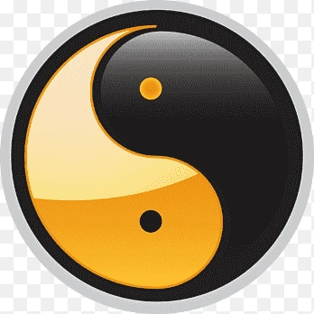

Back in the day, most martial arts were rigid in their ways. Styles that were abiding
by their tradition. Bruce Lee did not like styles. He said and I quote. "My style is to
have no style." He would go and study a number of martial arts and take from them only
the things that worked for him. More so, he would adopt the principles of something and
build on that, adding something of his own. For instance, the best punchers are most certainly
boxers. The best kicking techniques you will find in Muay Thai , Kung-Fu and Karate. The
best take downs and grapling techniques in wrestling, Judo and brazilian Jiu-Jitsu. So,
Bruce's philosophy was to take a bit from all of them, chiseling away things that don't work
in a real fight. Then take what's left test it to see if it works for you. Then take the
things that work for you and alter them so they perfectly align with you won physique.
And last but not least, feel free to have ideas of your own.
His ideas ispired many martial artists to experiment and mix different martial arts together.
And this paved the way to founding a whole new sport: Mixed Martial Arts or MMA for short.

Jeet Kune Do
Jeet Kune Do is a collection of techniques hand picked by Bruce Lee for his own use. The name
tranlated means Way of the Intercepting Fist. He has written several books that cover
techniques and principles. One of them is called Tao of Jeet Kune Do.
The other one covers his Fighting Methods and it is also called Bruce Lee's Fighting Methods
Here is what Bruce Lee said about Jeet Kune Do:
I have not invented a new style, composite, modified or otherwise that is set within distinct
form
as apart from this method or that method. On the contrary, I hope to free my followers
from
clinging to styles, patterns, or molds. Remember that Jeet Kune Do is merely a name used, a mirror
in
which
to see ourselves. . . Jeet Kune Do is not an organized institution that one can be a member
of.
Either you understand or you don't, and that is that. There is no mystery about my style. My
movements
are simple,
direct, and non-classical. The extraordinary part of it lies in its simplicity. Every movement in
Jeet
Kune Do is being
so of itself. There is nothing artificial about it. I always believe that the easy way is the right
way.
Jeet Kune Do is
simply the direct expression of one's feelings with the minimum of movements and energy. The closer
to
the true way of Kung Fu,
the less wastage of expression there is. Finally, a Jeet Kune Do man who says Jeet Kune Do is
exclusively Jeet Kune Do is
simply not with it. He is still hung up on his self-closing resistance, in this case, anchored down
to a
reactionary pattern,
and naturally is still bound by another modified pattern and can move within its limits. He has not
digested the simple fact
that truth exists outside all molds; pattern and awareness is never exclusive. Again let me remind
you
Jeet Kune Do is
just a name used, a boat to get one across, and once across it is to be discarded and not to be
carried
on one's back.
Adapt what is useful, reject what is useless, and add what is specifically your own
Bruce incorporated footwork and punching techniques from western boxing. He
adopted
some footwork from the
legendary heavy weight boxing champion Mohamad Ali. Some of the footwork came from
fencing. He took
some kicking techniques from Muay Thai and Kung-Fu. Other elements such
as
Grappling and Trapping came
from Jiu-Jitsu. First of all Bruce tryed to cover all aspects of hand to hand combat
punching,
kicking, trapping and grappling.
Yet, the point of all that was to learn what other people had learned so far and adopt the things
that
worked from his point of view.
He would take the principles and create his own techniques based on them.
 Impact on Martial Arts
Impact on Martial Arts